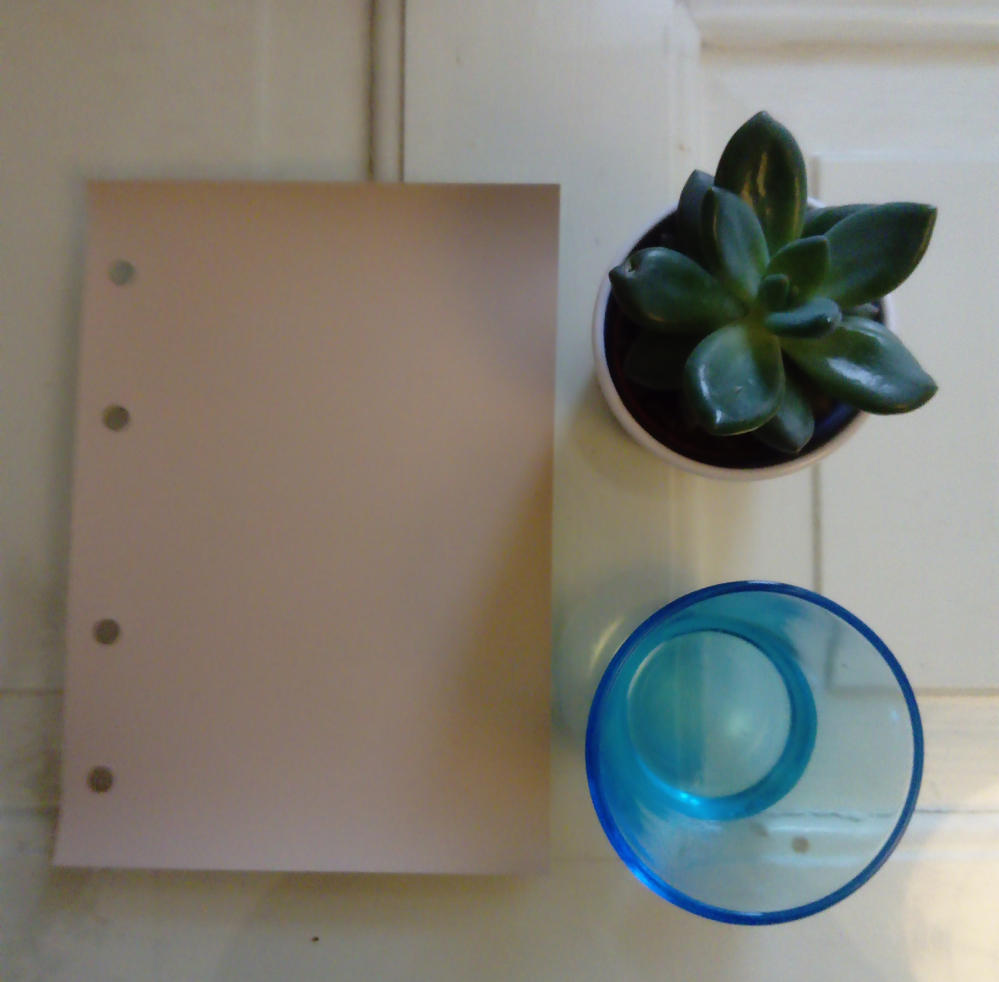

Messuosastoni olin sisustanut kesäkeittiöksi. Kaikki kasvit olivat syötäviä ja tunnelma oli kesäisen rento. Oli ihana jutella kanssasi messuilla! Arvonnat on suoritettu ja onnellisille voittajille ilmoitettu.
|
Tänä keväänä sisustustrendeissä on entistä enemmän värejä. Kodikkuus, lämpöiset beigen sävyt ovat tulleet harmaan rinnalle. Tikkurila valitsikin vuoden värikseen lämpöisen Angoran H466. Kasvit pitävät myös kovasti pintaansa sisustuksessa. Kasvit näkyvät nyt myös tapeteissa ja tekstiileissä. Kuten messuosastollanikin. Puu saa myös näkyä. Varsinkin vaalea puu on nyt todella pinnalla. |
 |
Mikäli kaipaat sisustusapua omiin sisustuspulmiisi, ota yhteyttä niin sovitaan tapaaminen.
Jo muutaman tunnin konsultoinnilla voi saada paljon aikaan. Osastollani käyneille tarjoankin 2 tunnin sisustuskonsultoinnin hintaan 100€ sis. alv 24%. Normaali hinta 130€. Tarjous voimassa toukokuun ajan.
Muistathan myös messutarjoukseni: yli 10 tunnin suunnitelmasta saat 100€ alennusta. Hyvä lahjaidea valmistuvalle tai hääparille!
Sisustusterveisin
Erika Rentola-Björklund Sisustussuunnitelija SI
|
|
|
p. 040-5629741 | erika@erb.fi |